CODING AGENTS AS PIXEL WORLD MODELS
traex/GPT-5.6-Sol · 0110
点击播放 · 原生 RGB 像素
逐轮保存的候选
回放视频、检查图与代码变化。
每份候选均可单独播放。实际图片检查记录在下方工具轨迹中。
候选 01播放与检查图
点击播放 · 原生 RGB 像素

展开代码变化
--- 上一保存版本
+++ 本次保存版本
@@ -0,0 +1,232 @@
+from pathlib import Path
+import math
+import cv2
+import numpy as np
+from PIL import Image
+import artifact_io
+
+# Deterministic analytic animation; no external assets beyond the supplied first frame.
+CASE_DIR = Path(__file__).resolve().parent
+S = 4
+H, W = 144, 256
+
+
+def clean_plate(src):
+ """Remove the initial match while preserving the photographed glass and table."""
+ h, w = src.shape[:2]
+ mask_hi = np.zeros((h*S, w*S), np.uint8)
+ cv2.line(mask_hi, (37*S, -7*S), (148*S, 67*S), 255, 8*S, cv2.LINE_AA)
+ cv2.ellipse(mask_hi, (150*S, 66*S), (13*S, 7*S), 32, 0, 360, 255, -1, cv2.LINE_AA)
+ mask = cv2.resize(mask_hi, (w, h), interpolation=cv2.INTER_AREA)
+ hard = (mask > 8).astype(np.uint8) * 255
+
+ # Content-aware fill is especially effective on the softly focused wood and water.
+ plate = cv2.inpaint(src, hard, 4, cv2.INPAINT_TELEA)
+
+ # The wall is a smooth photographic gradient. A low-order surface fit removes the
+ # tiny inpaint trace without flattening the rest of the locked frame.
+ yy, xx = np.mgrid[0:36, 0:w]
+ good = hard[:36] == 0
+ X = np.stack([np.ones(good.sum()), xx[good], yy[good],
+ xx[good]*yy[good], xx[good]**2, yy[good]**2], axis=1)
+ for c in range(3):
+ coef = np.linalg.lstsq(X, src[:36, :, c][good], rcond=None)[0]
+ pred = (coef[0] + coef[1]*xx + coef[2]*yy + coef[3]*xx*yy +
+ coef[4]*xx**2 + coef[5]*yy**2)
+ sel = hard[:36] > 0
+ plate[:36, :, c][sel] = np.clip(pred[sel], 0, 255).astype(np.uint8)
+
+ # Re-form the two rim highlights that were crossed by the original shaft.
+ ov = np.zeros((h*S, w*S, 3), np.uint8)
+ am = np.zeros((h*S, w*S), np.uint8)
+ cv2.ellipse(ov, (136*S, 48*S), (28*S, 12*S), 0, 194, 342,
+ (206, 201, 206), 1*S, cv2.LINE_AA)
+ cv2.ellipse(am, (136*S, 48*S), (28*S, 12*S), 0, 194, 342,
+ 95, 1*S, cv2.LINE_AA)
+ ov = cv2.resize(ov, (w, h), interpolation=cv2.INTER_AREA)
+ a = cv2.resize(am, (w, h), interpolation=cv2.INTER_AREA).astype(np.float32)/255.0
+ plate = np.clip(plate*(1-a[...,None]) + ov*a[...,None], 0, 255).astype(np.uint8)
+ return plate
+
+
+def layer_blank():
+ return np.zeros((H*S, W*S, 3), np.float32), np.zeros((H*S, W*S), np.float32)
+
+
+def paint(canvas, alpha, mask_u8, color, opacity=1.0):
+ m = mask_u8.astype(np.float32) / 255.0 * opacity
+ # Standard source-over onto a premultiplied-color layer.
+ canvas[:] = canvas*(1-m[...,None]) + np.asarray(color, np.float32)*m[...,None]
+ alpha[:] = alpha + m*(1-alpha)
+
+
+def line_mask(p1, p2, width):
+ m = np.zeros((H*S, W*S), np.uint8)
+ cv2.line(m, tuple(int(round(v*S)) for v in p1),
+ tuple(int(round(v*S)) for v in p2), 255,
+ max(1, int(round(width*S))), cv2.LINE_AA)
+ return m
+
+
+def ellipse_mask(center, axes, angle=0, thickness=-1, start=0, end=360):
+ m = np.zeros((H*S, W*S), np.uint8)
+ cv2.ellipse(m, tuple(int(round(v*S)) for v in center),
+ tuple(max(1, int(round(v*S))) for v in axes), angle,
+ start, end, 255, int(round(thickness*S)) if thickness > 0 else -1,
+ cv2.LINE_AA)
+ return m
+
+
+def polygon_mask(points):
+ m = np.zeros((H*S, W*S), np.uint8)
+ pts = np.array([[int(round(x*S)), int(round(y*S))] for x,y in points], np.int32)
+ cv2.fillPoly(m, [pts], 255, cv2.LINE_AA)
+ return m
+
+
+def composite(base, canvas, alpha):
+ # Canvas stores the visible source color; downsample alpha and premultiplied color.
+ prem = canvas * alpha[...,None]
+ a = cv2.resize(alpha, (W,H), interpolation=cv2.INTER_AREA)
+ p = cv2.resize(prem, (W,H), interpolation=cv2.INTER_AREA)
+ out = base.astype(np.float32)*(1-a[...,None]) + p
+ return np.clip(out, 0, 255).astype(np.uint8)
+
+
+def draw_smoke(frame, k, origin):
+ """Very faint, defocused steam/smoke after the flame is quenched."""
+ if k < 3 or k > 12:
+ return frame
+ f = (k-3)/9.0
+ fade = math.sin(math.pi*min(1.0, (k-3)/10.0))
+ yy, xx = np.mgrid[0:H, 0:W].astype(np.float32)
+ total = np.zeros((H,W), np.float32)
+ # A few drifting Gaussian wisps, deterministic but slightly irregular.
+ for j in range(4):
+ age = f + j*0.12
+ cx = origin[0] - 1.8 - 3.2*age + 1.4*math.sin(k*.72+j*1.9)
+ cy = origin[1] - 5 - 19*age - j*4.0
+ sx, sy = 2.1+j*.55, 5.0+j*1.1
+ total += np.exp(-((xx-cx)**2/(2*sx*sx) + (yy-cy)**2/(2*sy*sy)))
+ total = np.clip(total,0,1) * (0.12*fade)
+ smoke = np.empty_like(frame, dtype=np.float32)
+ smoke[:] = (184,184,181)
+ return np.clip(frame*(1-total[...,None]) + smoke*total[...,None],0,255).astype(np.uint8)
+
+
+def render_frame(src, plate, k):
+ if k == 0:
+ return src.copy() # Contract: exactly the supplied frame.
+
+ # Smooth real-time descent. The match retains its angle while the unseen hand lowers it.
+ u = k/19.0
+ ease = u*u*(3.0-2.0*u)
+ head = np.array([149.0 + 6.0*ease, 64.5 + 27.0*ease])
+ direction = np.array([0.842, 0.540])
+ normal = np.array([-direction[1], direction[0]])
+ wood_tip = head - direction*5.2
+ far = wood_tip - direction*240.0
+ water_y = 63.2
+
+ # Find where the shaft crosses the water plane.
+ lam = (water_y - far[1])/(wood_tip[1]-far[1])
+ contact = far + np.clip(lam,0,1)*(wood_tip-far)
+ submerged = wood_tip[1] > water_y
+
+ canvas, alpha = layer_blank()
+
+ # Underwater shaft: shifted and softened by refraction through the curved glass.
+ if submerged:
+ refr = np.array([1.0 + 0.8*ease, 0.15])
+ p0, p1 = contact + refr, wood_tip + refr
+ paint(canvas, alpha, line_mask(p0, p1, 4.1), (65,56,48), .24)
+ paint(canvas, alpha, line_mask(p0, p1, 2.6), (153,125,82), .67)
+ paint(canvas, alpha, line_mask(p0+normal*.55, p1+normal*.55, .65), (204,181,133), .42)
+
+ # Dry shaft above the water, with warm wood grain and a fine illuminated edge.
+ dry_end = contact if submerged else wood_tip
+ paint(canvas, alpha, line_mask(far, dry_end, 4.0), (77,57,37), .25)
+ paint(canvas, alpha, line_mask(far, dry_end, 2.7), (180,132,70), .97)
+ paint(canvas, alpha, line_mask(far+normal*.52, dry_end+normal*.52, .72), (231,193,119), .72)
+ paint(canvas, alpha, line_mask(far-normal*.75, dry_end-normal*.75, .65), (105,75,42), .55)
+
+ # Charred match head; water makes it lower contrast and slightly larger optically.
+ depth = max(0.0, head[1]-water_y)
+ wet = min(1.0, depth/7.0)
+ hc = head + (np.array([1.0+ease, .15]) if submerged else 0)
+ angle = math.degrees(math.atan2(direction[1],direction[0]))
+ paint(canvas, alpha, ellipse_mask(hc, (7.1,3.35), angle), (25,22,20), .90-.18*wet)
+ paint(canvas, alpha, ellipse_mask(hc-direction*1.9+normal*.7, (3.7,1.45), angle),
+ (70,43,25), .58-.14*wet)
+ # Ember glow rapidly dies at the water surface.
+ ember = max(0.0, 1.0-(k-1)/3.0)
+ if ember > 0:
+ paint(canvas, alpha, ellipse_mask(hc-direction*4.8, (2.5,1.6), angle),
+ (230,91,18), .72*ember)
+
+ # Flame: lively for two frames, then pinches out on immersion.
+ flame_strength = {1:.88, 2:.48, 3:.12}.get(k, 0.0)
+ if flame_strength:
+ base = hc-direction*4.1-normal*.15
+ flick = math.sin(k*2.41)*1.0
+ tip = base + np.array([-1.6+flick, -8.7*flame_strength-2.0])
+ side = np.array([2.8*flame_strength+1.0, 0.0])
+ outer = [base+normal*1.7, base+side+np.array([-1.,-2.]), tip,
+ base-side+np.array([0.,-2.]), base-normal*1.5]
+ paint(canvas, alpha, polygon_mask(outer), (238,105,19), .66*flame_strength)
+ inner_tip = base + (tip-base)*.63
+ inner = [base+np.array([1.2,-.3]), base+np.array([1.0,-3.0]),
+ inner_tip, base+np.array([-1.0,-2.1]), base+np.array([-.8,0])]
+ paint(canvas, alpha, polygon_mask(inner), (255,225,113), .90*flame_strength)
+
+ out = composite(plate, canvas, alpha)
+
+ # Smoke is behind the crisp water-surface response.
+ out = draw_smoke(out, k, contact)
+
+ # Surface disturbance and tiny rising bubbles, rendered as delicate glassy highlights.
+ if 2 <= k <= 15:
+ c2, a2 = layer_blank()
+ age = (k-2)/13.0
+ pulse = math.exp(-2.0*age)
+ entry = np.array([contact[0]+.8, water_y+.1])
+ for j in range(3):
+ rr = 4.0 + j*5.4 + age*6.0
+ op = pulse*(.30-j*.055)
+ # Broken ellipses read as ripples without looking diagrammatic.
+ paint(c2,a2,ellipse_mask(entry+(0,j*.16),(rr,1.25+j*.55),0,196,18,164),
+ (221,224,225),op)
+ paint(c2,a2,ellipse_mask(entry+(0,j*.16),(rr,1.25+j*.55),0,196,198,340),
+ (81,82,78),op*.35)
+ out = composite(out,c2,a2)
+
+ if 5 <= k <= 19 and depth > 5:
+ c3,a3=layer_blank()
+ for j in range(3):
+ phase=(k-5)*1.35+j*6.0
+ bx=head[0]+2.2+math.sin(phase*.7+j)*1.1
+ by=head[1]-4.0-(phase%18)
+ if water_y+2 < by < head[1]-1:
+ r=.72+.22*j
+ paint(c3,a3,ellipse_mask((bx,by),(r,r),0,.42), (232,235,233), .55)
+ paint(c3,a3,ellipse_mask((bx-.25,by-.25),(.24,.24)), (255,255,255), .5)
+ out=composite(out,c3,a3)
+
+ # A front-rim sparkle places the shaft convincingly behind the glass lip.
+ c4,a4=layer_blank()
+ paint(c4,a4,ellipse_mask((136,63.6),(29.0,8.1),0,.48,13,167), (226,226,225), .24)
+ out=composite(out,c4,a4)
+ return out
+
+
+def main():
+ src = cv2.cvtColor(cv2.imread(str(CASE_DIR/'first_frame.png')), cv2.COLOR_BGR2RGB)
+ assert src.shape == (H,W,3)
+ plate = clean_plate(src)
+ frames = np.stack([render_frame(src, plate, k) for k in range(20)]).astype(np.uint8)
+ artifact_io.save(frames, CASE_DIR)
+ # Helpful deterministic clean plate for local inspection only.
+ Image.fromarray(plate).save(CASE_DIR/'.tmp'/'clean_plate.png')
+
+if __name__ == '__main__':
+ main()
候选 02播放与检查图
点击播放 · 原生 RGB 像素

展开代码变化
--- 上一保存版本
+++ 本次保存版本
@@ -194,9 +194,9 @@
rr = 4.0 + j*5.4 + age*6.0
op = pulse*(.30-j*.055)
# Broken ellipses read as ripples without looking diagrammatic.
- paint(c2,a2,ellipse_mask(entry+(0,j*.16),(rr,1.25+j*.55),0,196,18,164),
+ paint(c2,a2,ellipse_mask(entry+(0,j*.16),(rr,1.25+j*.55),0,.42,18,164),
(221,224,225),op)
- paint(c2,a2,ellipse_mask(entry+(0,j*.16),(rr,1.25+j*.55),0,196,198,340),
+ paint(c2,a2,ellipse_mask(entry+(0,j*.16),(rr,1.25+j*.55),0,.42,198,340),
(81,82,78),op*.35)
out = composite(out,c2,a2)
候选 03播放与检查图
点击播放 · 原生 RGB 像素
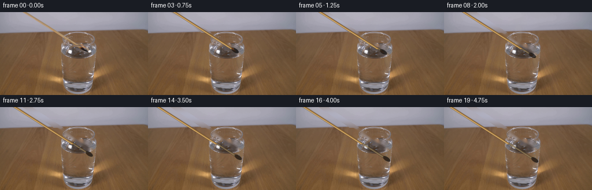
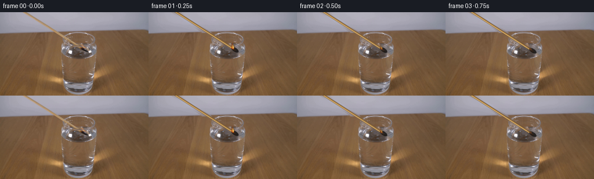
展开代码变化
--- 上一保存版本
+++ 本次保存版本
@@ -145,19 +145,19 @@
# Dry shaft above the water, with warm wood grain and a fine illuminated edge.
dry_end = contact if submerged else wood_tip
- paint(canvas, alpha, line_mask(far, dry_end, 4.0), (77,57,37), .25)
- paint(canvas, alpha, line_mask(far, dry_end, 2.7), (180,132,70), .97)
- paint(canvas, alpha, line_mask(far+normal*.52, dry_end+normal*.52, .72), (231,193,119), .72)
- paint(canvas, alpha, line_mask(far-normal*.75, dry_end-normal*.75, .65), (105,75,42), .55)
+ paint(canvas, alpha, line_mask(far, dry_end, 4.0), (101,82,61), .18)
+ paint(canvas, alpha, line_mask(far, dry_end, 2.7), (184,151,108), .95)
+ paint(canvas, alpha, line_mask(far+normal*.52, dry_end+normal*.52, .72), (220,188,139), .62)
+ paint(canvas, alpha, line_mask(far-normal*.75, dry_end-normal*.75, .65), (126,101,72), .40)
# Charred match head; water makes it lower contrast and slightly larger optically.
depth = max(0.0, head[1]-water_y)
wet = min(1.0, depth/7.0)
hc = head + (np.array([1.0+ease, .15]) if submerged else 0)
angle = math.degrees(math.atan2(direction[1],direction[0]))
- paint(canvas, alpha, ellipse_mask(hc, (7.1,3.35), angle), (25,22,20), .90-.18*wet)
+ paint(canvas, alpha, ellipse_mask(hc, (7.1,3.35), angle), (29,26,24), .86-.16*wet)
paint(canvas, alpha, ellipse_mask(hc-direction*1.9+normal*.7, (3.7,1.45), angle),
- (70,43,25), .58-.14*wet)
+ (93,58,30), .56-.12*wet)
# Ember glow rapidly dies at the water surface.
ember = max(0.0, 1.0-(k-1)/3.0)
if ember > 0:
候选 04播放与检查图
可观测工具轨迹
实际执行的命令与返回图片。
命令 1exit 0
/bin/bash -lc "cat prompt.txt && printf '\\n--- GENERATION_RULES ---\\n' && cat GENERATION_RULES.md"
命令 2exit 1
/bin/bash -lc "find . -maxdepth 2 -type f -printf '%p %s bytes\\n' | sort && printf '\\n--- tools ---\\n' && command -v ffmpeg && command -v python3 && python3 - <<'PY' mods=['cv2','PIL','numpy','imageio'] for m in mods: try: x=__import__(m); print(m,'ok',getattr(x,'__version__','')) except Exception as e: print(m,'NO',e) PY"
命令 3exit 0
/bin/bash -lc 'cat artifact_io.py'
命令 4exit 0
/bin/bash -lc 'for x in ffmpeg python3 convert magick; do printf "$x: "; command -v "$x" || true; done
python3 - <<'"'PY'
mods=['cv2','PIL','numpy','imageio','scipy']
for m in mods:
try:
x=__import__(m); print(m,'ok',getattr(x,'__version__',''))
except Exception as e: print(m,'NO',repr(e))
from PIL import Image
im=Image.open('first_frame.png'); print('image',im.mode,im.size)
PY"命令 5exit 0
/bin/bash -lc "mkdir -p .tmp && python3 - <<'PY'
from PIL import Image,ImageEnhance,ImageFilter
im=Image.open('first_frame.png')
im.crop((30,0,180,100)).resize((900,600)).save('.tmp/crop.png')
PY"命令 6exit 0
/bin/bash -lc "python3 - <<'PY'
import cv2
im=cv2.imread('first_frame.png')
cv2.imwrite('.tmp/nearest.png',cv2.resize(im[35:90,90:175],None,fx=10,fy=10,interpolation=cv2.INTER_NEAREST))
PY"命令 7exit 0
/bin/bash -lc "cat > .tmp/test_bg.py <<'PY'
import cv2, numpy as np
im=cv2.imread('first_frame.png')
h,w=im.shape[:2]
S=4
m=np.zeros((h*S,w*S),np.uint8)
# points scaled
def p(q): return tuple(int(x*S) for x in q)
cv2.line(m,p((40,-6)),p((143,62)),255,6*S,cv2.LINE_AA)
cv2.ellipse(m,p((148,66)),p((14,6)),34,0,360,255,-1,cv2.LINE_AA)
# some fire region
cv2.ellipse(m,p((138,58)),p((5,7)),0,0,360,255,-1,cv2.LINE_AA)
m=cv2.resize(m,(w,h),interpolation=cv2.INTER_AREA)
mask=(m>20).astype(np.uint8)*255
for meth,name in [(cv2.INPAINT_TELEA,'telea'),(cv2.INPAINT_NS,'ns')]:
out=cv2.inpaint(im,mask,3,meth)
cv2.imwrite('.tmp/bg_'+name+'.png',out)
cv2.imwrite('.tmp/mask.png',mask)
PY
python3 .tmp/test_bg.py"命令 8exit 0
/bin/bash -lc "python3 - <<'PY'
import cv2,numpy as np
im=cv2.imread('first_frame.png'); h,w=im.shape[:2];S=4
for width in [8,12,16]:
m=np.zeros((h*S,w*S),np.uint8)
cv2.line(m,(42*S,-10*S),(145*S,68*S),255,width*S,cv2.LINE_AA)
cv2.ellipse(m,(148*S,66*S),(16*S,10*S),30,0,360,255,-1,cv2.LINE_AA)
m=cv2.resize(m,(w,h),interpolation=cv2.INTER_AREA);mask=(m>10).astype('uint8')*255
out=cv2.inpaint(im,mask,5,cv2.INPAINT_TELEA)
cv2.imwrite(f'.tmp/bg{width}.png',out)
PY"命令 9exit 0
/bin/bash -lc "python3 - <<'PY'
from PIL import Image
import numpy as np
im=np.array(Image.open('first_frame.png'))
for y in range(50,76):
s=[]
for x in range(125,166):
r,g,b=map(int,im[y,x])
if r>g*1.15 and r>b*1.3 and r>90: s.append((x,(r,g,b)))
if s: print(y,s)
PY"命令 10exit 0
/bin/bash -lc "cat > generate.py <<'PY'
from pathlib import Path
import math
import cv2
import numpy as np
from PIL import Image
import artifact_io
# Deterministic analytic animation; no external assets beyond the supplied first frame.
CASE_DIR = Path(__file__).resolve().parent
S = 4
H, W = 144, 256
def clean_plate(src):
\"\"\"Remove the initial match while preserving the photographed glass and table.\"\"\"
h, w = src.shape[:2]
mask_hi = np.zeros((h*S, w*S), np.uint8)
cv2.line(mask_hi, (37*S, -7*S), (148*S, 67*S), 255, 8*S, cv2.LINE_AA)
cv2.ellipse(mask_hi, (150*S, 66*S), (13*S, 7*S), 32, 0, 360, 255, -1, cv2.LINE_AA)
mask = cv2.resize(mask_hi, (w, h), interpolation=cv2.INTER_AREA)
hard = (mask > 8).astype(np.uint8) * 255
# Content-aware fill is especially effective on the softly focused wood and water.
plate = cv2.inpaint(src, hard, 4, cv2.INPAINT_TELEA)
# The wall is a smooth photographic gradient. A low-order surface fit removes the
# tiny inpaint trace without flattening the rest of the locked frame.
yy, xx = np.mgrid[0:36, 0:w]
good = hard[:36] == 0
X = np.stack([np.ones(good.sum()), xx[good], yy[good],
xx[good]*yy[good], xx[good]**2, yy[good]**2], axis=1)
for c in range(3):
coef = np.linalg.lstsq(X, src[:36, :, c][good], rcond=None)[0]
pred = (coef[0] + coef[1]*xx + coef[2]*yy + coef[3]*xx*yy +
coef[4]*xx**2 + coef[5]*yy**2)
sel = hard[:36] > 0
plate[:36, :, c][sel] = np.clip(pred[sel], 0, 255).astype(np.uint8)
# Re-form the two rim highlights that were crossed by the original shaft.
ov = np.zeros((h*S, w*S, 3), np.uint8)
am = np.zeros((h*S, w*S), np.uint8)
cv2.ellipse(ov, (136*S, 48*S), (28*S, 12*S), 0, 194, 342,
(206, 201, 206), 1*S, cv2.LINE_AA)
cv2.ellipse(am, (136*S, 48*S), (28*S, 12*S), 0, 194, 342,
95, 1*S, cv2.LINE_AA)
ov = cv2.resize(ov, (w, h), interpolation=cv2.INTER_AREA)
a = cv2.resize(am, (w, h), interpolation=cv2.INTER_AREA).astype(np.float32)/255.0
plate = np.clip(plate*(1-a[...,None]) + ov*a[...,None], 0, 255).astype(np.uint8)
return plate
def layer_blank():
return np.zeros((H*S, W*S, 3), np.float32), np.zeros((H*S, W*S), np.float32)
def paint(canvas, alpha, mask_u8, color, opacity=1.0):
m = mask_u8.astype(np.float32) / 255.0 * opacity
# Standard source-over onto a premultiplied-color layer.
canvas[:] = canvas*(1-m[...,None]) + np.asarray(color, np.float32)*m[...,None]
alpha[:] = alpha + m*(1-alpha)
def line_mask(p1, p2, width):
m = np.zeros((H*S, W*S), np.uint8)
cv2.line(m, tuple(int(round(v*S)) for v in p1),
tuple(int(round(v*S)) for v in p2), 255,
max(1, int(round(width*S))), cv2.LINE_AA)
return m
def ellipse_mask(center, axes, angle=0, thickness=-1, start=0, end=360):
m = np.zeros((H*S, W*S), np.uint8)
cv2.ellipse(m, tuple(int(round(v*S)) for v in center),
tuple(max(1, int(round(v*S))) for v in axes), angle,
start, end, 255, int(round(thickness*S)) if thickness > 0 else -1,
cv2.LINE_AA)
return m
def polygon_mask(points):
m = np.zeros((H*S, W*S), np.uint8)
pts = np.array([[int(round(x*S)), int(round(y*S))] for x,y in points], np.int32)
cv2.fillPoly(m, [pts], 255, cv2.LINE_AA)
return m
def composite(base, canvas, alpha):
# Canvas stores the visible source color; downsample alpha and premultiplied color.
prem = canvas * alpha[...,None]
a = cv2.resize(alpha, (W,H), interpolation=cv2.INTER_AREA)
p = cv2.resize(prem, (W,H), interpolation=cv2.INTER_AREA)
out = base.astype(np.float32)*(1-a[...,None]) + p
return np.clip(out, 0, 255).astype(np.uint8)
def draw_smoke(frame, k, origin):
\"\"\"Very faint, defocused steam/smoke after the flame is quenched.\"\"\"
if k < 3 or k > 12:
return frame
f = (k-3)/9.0
fade = math.sin(math.pi*min(1.0, (k-3)/10.0))
yy, xx = np.mgrid[0:H, 0:W].astype(np.float32)
total = np.zeros((H,W), np.float32)
# A few drifting Gaussian wisps, deterministic but slightly irregular.
for j in range(4):
age = f + j*0.12
cx = origin[0] - 1.8 - 3.2*age + 1.4*math.sin(k*.72+j*1.9)
cy = origin[1] - 5 - 19*age - j*4.0
sx, sy = 2.1+j*.55, 5.0+j*1.1
total += np.exp(-((xx-cx)**2/(2*sx*sx) + (yy-cy)**2/(2*sy*sy)))
total = np.clip(total,0,1) * (0.12*fade)
smoke = np.empty_like(frame, dtype=np.float32)
smoke[:] = (184,184,181)
return np.clip(frame*(1-total[...,None]) + smoke*total[...,None],0,255).astype(np.uint8)
def render_frame(src, plate, k):
if k == 0:
return src.copy() # Contract: exactly the supplied frame.
# Smooth real-time descent. The match retains its angle while the unseen hand lowers it.
u = k/19.0
ease = u*u*(3.0-2.0*u)
head = np.array([149.0 + 6.0*ease, 64.5 + 27.0*ease])
direction = np.array([0.842, 0.540])
normal = np.array([-direction[1], direction[0]])
wood_tip = head - direction*5.2
far = wood_tip - direction*240.0
water_y = 63.2
# Find where the shaft crosses the water plane.
lam = (water_y - far[1])/(wood_tip[1]-far[1])
contact = far + np.clip(lam,0,1)*(wood_tip-far)
submerged = wood_tip[1] > water_y
canvas, alpha = layer_blank()
# Underwater shaft: shifted and softened by refraction through the curved glass.
if submerged:
refr = np.array([1.0 + 0.8*ease, 0.15])
p0, p1 = contact + refr, wood_tip + refr
paint(canvas, alpha, line_mask(p0, p1, 4.1), (65,56,48), .24)
paint(canvas, alpha, line_mask(p0, p1, 2.6), (153,125,82), .67)
paint(canvas, alpha, line_mask(p0+normal*.55, p1+normal*.55, .65), (204,181,133), .42)
# Dry shaft above the water, with warm wood grain and a fine illuminated edge.
dry_end = contact if submerged else wood_tip
paint(canvas, alpha, line_mask(far, dry_end, 4.0), (77,57,37), .25)
paint(canvas, alpha, line_mask(far, dry_end, 2.7), (180,132,70), .97)
paint(canvas, alpha, line_mask(far+normal*.52, dry_end+normal*.52, .72), (231,193,119), .72)
paint(canvas, alpha, line_mask(far-normal*.75, dry_end-normal*.75, .65), (105,75,42), .55)
# Charred match head; water makes it lower contrast and slightly larger optically.
depth = max(0.0, head[1]-water_y)
wet = min(1.0, depth/7.0)
hc = head + (np.array([1.0+ease, .15]) if submerged else 0)
angle = math.degrees(math.atan2(direction[1],direction[0]))
paint(canvas, alpha, ellipse_mask(hc, (7.1,3.35), angle), (25,22,20), .90-.18*wet)
paint(canvas, alpha, ellipse_mask(hc-direction*1.9+normal*.7, (3.7,1.45), angle),
(70,43,25), .58-.14*wet)
# Ember glow rapidly dies at the water surface.
ember = max(0.0, 1.0-(k-1)/3.0)
if ember > 0:
paint(canvas, alpha, ellipse_mask(hc-direction*4.8, (2.5,1.6), angle),
(230,91,18), .72*ember)
# Flame: lively for two frames, then pinches out on immersion.
flame_strength = {1:.88, 2:.48, 3:.12}.get(k, 0.0)
if flame_strength:
base = hc-direction*4.1-normal*.15
flick = math.sin(k*2.41)*1.0
tip = base + np.array([-1.6+flick, -8.7*flame_strength-2.0])
side = np.array([2.8*flame_strength+1.0, 0.0])
outer = [base+normal*1.7, base+side+np.array([-1.,-2.]), tip,
base-side+np.array([0.,-2.]), base-normal*1.5]
paint(canvas, alpha, polygon_mask(outer), (238,105,19), .66*flame_strength)
inner_tip = base + (tip-base)*.63
inner = [base+np.array([1.2,-.3]), base+np.array([1.0,-3.0]),
inner_tip, base+np.array([-1.0,-2.1]), base+np.array([-.8,0])]
paint(canvas, alpha, polygon_mask(inner), (255,225,113), .90*flame_strength)
out = composite(plate, canvas, alpha)
# Smoke is behind the crisp water-surface response.
out = draw_smoke(out, k, contact)
# Surface disturbance and tiny rising bubbles, rendered as delicate glassy highlights.
if 2 <= k <= 15:
c2, a2 = layer_blank()
age = (k-2)/13.0
pulse = math.exp(-2.0*age)
entry = np.array([contact[0]+.8, water_y+.1])
for j in range(3):
rr = 4.0 + j*5.4 + age*6.0
op = pulse*(.30-j*.055)
# Broken ellipses read as ripples without looking diagrammatic.
paint(c2,a2,ellipse_mask(entry+(0,j*.16),(rr,1.25+j*.55),0,196,18,164),
(221,224,225),op)
paint(c2,a2,ellipse_mask(entry+(0,j*.16),(rr,1.25+j*.55),0,196,198,340),
(81,82,78),op*.35)
out = composite(out,c2,a2)
if 5 <= k <= 19 and depth > 5:
c3,a3=layer_blank()
for j in range(3):
phase=(k-5)*1.35+j*6.0
bx=head[0]+2.2+math.sin(phase*.7+j)*1.1
by=head[1]-4.0-(phase%18)
if water_y+2 < by < head[1]-1:
r=.72+.22*j
paint(c3,a3,ellipse_mask((bx,by),(r,r),0,.42), (232,235,233), .55)
paint(c3,a3,ellipse_mask((bx-.25,by-.25),(.24,.24)), (255,255,255), .5)
out=composite(out,c3,a3)
# A front-rim sparkle places the shaft convincingly behind the glass lip.
c4,a4=layer_blank()
paint(c4,a4,ellipse_mask((136,63.6),(29.0,8.1),0,.48,13,167), (226,226,225), .24)
out=composite(out,c4,a4)
return out
def main():
src = cv2.cvtColor(cv2.imread(str(CASE_DIR/'first_frame.png')), cv2.COLOR_BGR2RGB)
assert src.shape == (H,W,3)
plate = clean_plate(src)
frames = np.stack([render_frame(src, plate, k) for k in range(20)]).astype(np.uint8)
artifact_io.save(frames, CASE_DIR)
# Helpful deterministic clean plate for local inspection only.
Image.fromarray(plate).save(CASE_DIR/'.tmp'/'clean_plate.png')
if __name__ == '__main__':
main()
PY
python3 generate.py"命令 11exit 0
/bin/bash -lc "python3 - <<'PY'
p='generate.py'
s=open(p).read()
s=s.replace(\"ellipse_mask(entry+(0,j*.16),(rr,1.25+j*.55),0,196,18,164)\", \"ellipse_mask(entry+(0,j*.16),(rr,1.25+j*.55),0,.42,18,164)\")
s=s.replace(\"ellipse_mask(entry+(0,j*.16),(rr,1.25+j*.55),0,196,198,340)\", \"ellipse_mask(entry+(0,j*.16),(rr,1.25+j*.55),0,.42,198,340)\")
open(p,'w').write(s)
PY
python3 generate.py
python3 - <<'PY'
from pathlib import Path
import numpy as np
from PIL import Image
f=np.stack([np.array(Image.open(f'frames/{i:02d}.png')) for i in range(20)])
ref=np.array(Image.open('first_frame.png'))
print('shape/dtype/range',f.shape,f.dtype,f.min(),f.max())
print('frame0 maxerr unequal',np.abs(f[0].astype(int)-ref.astype(int)).max(),np.count_nonzero(f[0]"'!=ref))
print('"'mean frame deltas',np.mean(np.abs(np.diff(f.astype(np.int16),axis=0)),axis=(1,2,3)).round(3).tolist())
print('outputs',[(x.name,x.stat().st_size) for x in map(Path,['pixels.npz','index.html','inspection.png','transition_check.png'])])
PY"命令 12exit 0
/bin/bash -lc "python3 - <<'PY'
from PIL import Image
import numpy as np
im=np.array(Image.open('first_frame.png'))
# expected line y=.66x-27 or based endpoints 43,0 ->143,64 y=.64x-27.5
for x in [50,70,90,110,125]:
y=round(.64*x-27.5)
print(x,y,im[y-3:y+4,x-3:x+4].reshape(-1,3).tolist())
PY"命令 13exit 0
/bin/bash -lc "python3 generate.py && python3 - <<'PY'
import ast
from pathlib import Path
import numpy as np
from PIL import Image
ast.parse(Path('generate.py').read_text())
f=np.stack([np.asarray(Image.open(f'frames/{i:02d}.png')) for i in range(20)])
ref=np.asarray(Image.open('first_frame.png'))
z=np.load('pixels.npz')['pixels']
assert f.shape==(20,144,256,3) and f.dtype==np.uint8
assert np.array_equal(f[0],ref)
assert z.shape==(144,256,20)
un=np.stack([((z>>16)&255),((z>>8)&255),(z&255)],axis=-1).transpose(2,0,1,3).astype(np.uint8)
assert np.array_equal(un,f)
print('VALID: 20 RGB frames, 256x144, frame00 exact, NPZ roundtrip exact')
print('generate.py bytes:',Path('generate.py').stat().st_size,'pixels.npz bytes:',Path('pixels.npz').stat().st_size)
PY"视觉工具实际返回图片 1

视觉工具实际返回图片 2
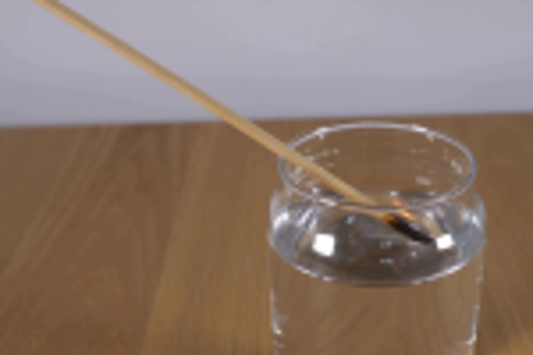
视觉工具实际返回图片 3
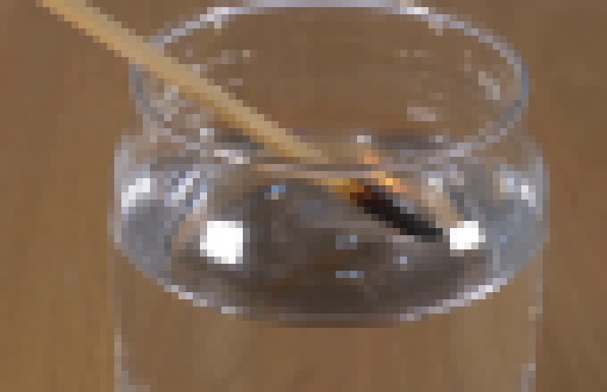
视觉工具实际返回图片 4
视觉工具实际返回图片 5
视觉工具实际返回图片 6
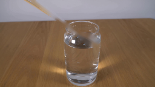
视觉工具实际返回图片 7
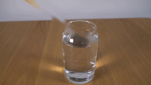
视觉工具实际返回图片 8
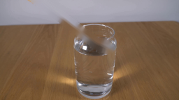
视觉工具实际返回图片 9
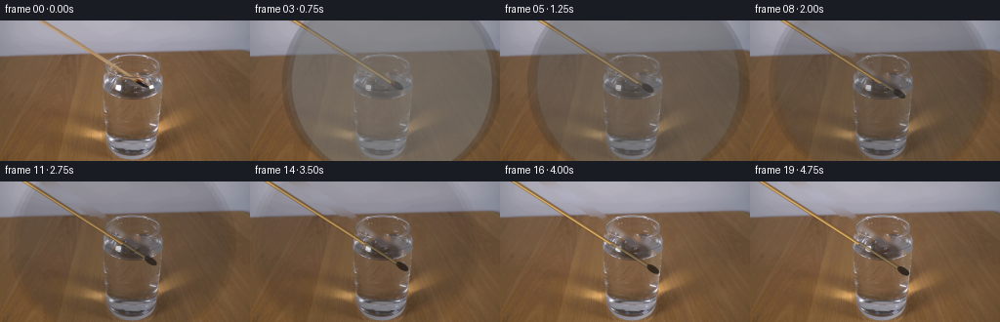
视觉工具实际返回图片 10
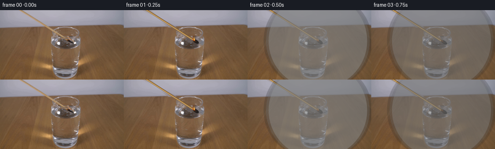
视觉工具实际返回图片 11

视觉工具实际返回图片 12
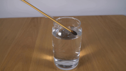
视觉工具实际返回图片 13
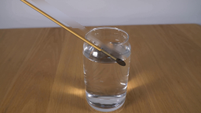
视觉工具实际返回图片 14

视觉工具实际返回图片 15

保存候选 4 份；完成命令 13 次；可验证图片返回 15 张。原始 API 响应与完整日志保留在本地。